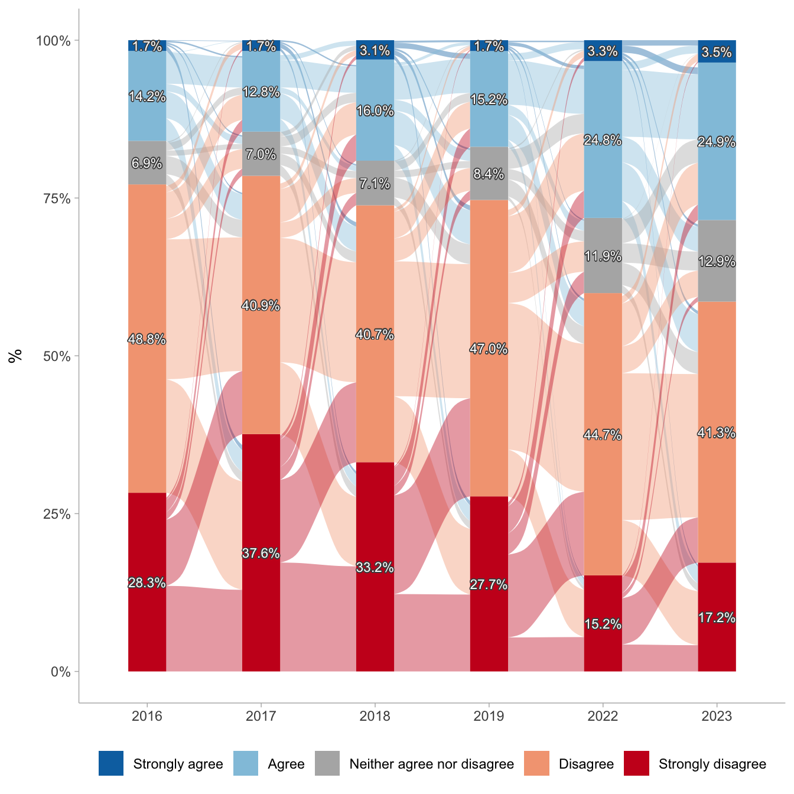
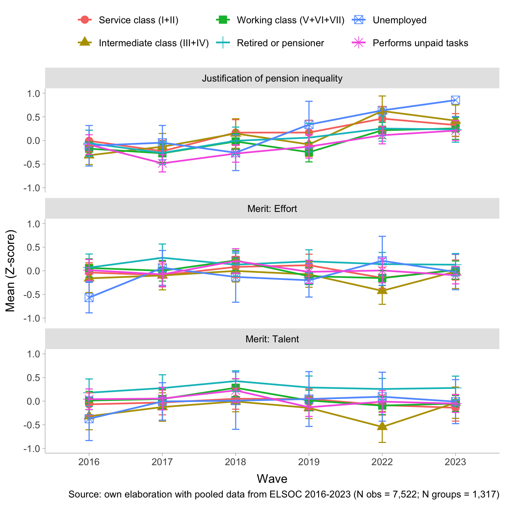

1 Presentation
This is the analysis code for the paper “Changes in the Justification of Pension Inequality in Chile (2016–2023) and its Relationship to Social Class and Beliefs in Meritocracy”. The dataset used is df_balanced.RData.
2 Libraries
3 Data
Show the code
load(file = here("input/data/proc/df_balanced.RData"))
glimpse(df_balanced)Rows: 7,968
Columns: 17
$ idencuesta <dbl> 1101011, 1101011, 1101011, 1101011, 1101011, 110…
$ ola <dbl> 1, 2, 3, 4, 6, 7, 1, 2, 3, 4, 6, 7, 1, 2, 3, 4, …
$ muestra <dbl> 1, 1, 1, 1, 1, 1, 1, 1, 1, 1, 1, 1, 1, 1, 1, 1, …
$ ponderador_long_total <dbl> 0.11821742, 0.16716225, 0.15261954, 0.33262422, …
$ segmento <dbl> 110101, 110101, 110101, 110101, 110101, 110101, …
$ estrato <dbl> 4, 4, 4, 4, 4, 4, 4, 4, 4, 4, 4, 4, 4, 4, 4, 4, …
$ just_pension <fct> Strongly disagree, Strongly disagree, Strongly d…
$ egp <fct> Retired or pensioner, Retired or pensioner, Reti…
$ oesch <fct> 'Retired or pensioner', 'Retired or pensioner', …
$ merit_effort <fct> Agree, Disagree, Agree, Disagree, Disagree, Disa…
$ merit_talent <fct> Agree, Disagree, Neither agree nor disagree, Dis…
$ educ <fct> Less than Universitary, Less than Universitary, …
$ educyear <dbl> 4.30, 4.30, 4.30, 4.30, 4.30, 4.30, 9.80, 9.80, …
$ sex <fct> Female, Female, Female, Female, Female, Female, …
$ age <dbl> 64, 64, 64, 64, 64, 64, 60, 60, 60, 60, 60, 60, …
$ aget <fct> 50-64, 50-64, 50-64, 50-64, 50-64, 50-64, 50-64,…
$ ideo <fct> Does not identify, Does not identify, Does not i…Show the code
# Generate analytical sample
df_study1 <- df_balanced %>%
select(-muestra) %>%
na.omit() %>%
mutate(ola = case_when(ola == 1 ~ 1,
ola == 2 ~ 2,
ola == 3 ~ 3,
ola == 4 ~ 4,
ola == 6 ~ 5,
ola == 7 ~ 6)) %>%
mutate(ola = as.factor(ola),
ola_num = as.numeric(ola),
ola_2=as.numeric(ola)^2)
df_study1 <- df_study1 %>%
group_by(idencuesta) %>% # Agrupar por el identificador del participante
mutate(n_participaciones = n()) %>% # Contar el número de filas (participaciones) por participante
ungroup()
df_study1 <- df_study1 %>% filter(n_participaciones>1)
# Corregir etiquetas
df_study1$just_pension <- sjlabelled::set_label(df_study1$just_pension,
label = "Pension distributive justice")
df_study1$egp <- sjlabelled::set_label(df_study1$egp,
label = "Social class")
df_study1$merit_effort <- sjlabelled::set_label(df_study1$merit_effort,
label = "People are rewarded for their efforts")
df_study1$merit_talent <- sjlabelled::set_label(df_study1$merit_talent,
label = "People are rewarded for their intelligence")4 Analysis
4.1 Descriptives
Show the code
datos.pension <- df_study1 %>%
mutate(just_pension = factor(just_pension,
levels = c("Strongly agree",
"Agree",
"Neither agree nor disagree",
"Disagree",
"Strongly disagree"))) %>%
group_by(idencuesta, ola) %>%
count(just_pension) %>%
group_by(ola) %>%
mutate(porcentaje=n/sum(n)) %>%
ungroup() %>%
na.omit() %>%
mutate(wave = case_when(ola == 1 ~ "2016",
ola == 2 ~ "2017",
ola == 3 ~ "2018",
ola == 4 ~ "2019",
ola == 5 ~ "2022",
ola == 6 ~ "2023"),
wave = factor(wave, levels = c("2016",
"2017",
"2018",
"2019",
"2022",
"2023")))
etiquetas.pension <- df_study1 %>%
mutate(just_pension = factor(just_pension,
levels = c("Strongly agree",
"Agree",
"Neither agree nor disagree",
"Disagree",
"Strongly disagree"))) %>%
group_by(ola, just_pension) %>%
summarise(count = n(), .groups = "drop") %>%
group_by(ola) %>%
mutate(porcentaje = count / sum(count)) %>%
na.omit() %>%
mutate(idencuesta = 1,
wave = case_when(ola == 1 ~ "2016",
ola == 2 ~ "2017",
ola == 3 ~ "2018",
ola == 4 ~ "2019",
ola == 5 ~ "2022",
ola == 6 ~ "2023"),
wave = factor(wave, levels = c("2016",
"2017",
"2018",
"2019",
"2022",
"2023")))
datos.pension %>%
ggplot(aes(x = wave, fill = just_pension, stratum = just_pension,
alluvium = idencuesta, y = porcentaje)) +
ggalluvial::geom_flow(alpha = .4) +
ggalluvial::geom_stratum(linetype = 0) +
scale_y_continuous(labels = scales::percent) +
scale_fill_manual(values = c("#0571B0","#92C5DE","#b3b3b3ff","#F4A582","#CA0020")) +
geom_shadowtext(data = etiquetas.pension,
aes(label = ifelse(porcentaje > 0 , scales::percent(porcentaje, accuracy = .1),"")),
position = position_stack(vjust = .5),
show.legend = FALSE,
size = 3,
color = rep('white'),
bg.colour='grey30')+
labs(y = "%",
x = NULL,
fill = NULL,
title = NULL) +
theme_ggdist() +
theme(legend.position = "bottom") 
Show the code
Data Frame Summary
t2
Dimensions: 1299 x 4Duplicates: 1008
| No | Variable | Label | Stats / Values | Freqs (% of Valid) | Graph | Valid | Missing | ||||||||||||||||||||||||||||||
|---|---|---|---|---|---|---|---|---|---|---|---|---|---|---|---|---|---|---|---|---|---|---|---|---|---|---|---|---|---|---|---|---|---|---|---|---|---|
| 1 | just_pension [factor] | Pension distributive justice |
|
|
 |
1299 (100.0%) | 0 (0.0%) | ||||||||||||||||||||||||||||||
| 2 | egp [factor] | Social class |
|
|
 |
1299 (100.0%) | 0 (0.0%) | ||||||||||||||||||||||||||||||
| 3 | merit_effort [factor] | People are rewarded for their efforts |
|
|
 |
1299 (100.0%) | 0 (0.0%) | ||||||||||||||||||||||||||||||
| 4 | merit_talent [factor] | People are rewarded for their intelligence |
|
|
 |
1299 (100.0%) | 0 (0.0%) |
Generated by summarytools 1.1.4 (R version 4.2.3)
2025-12-08

4.2 Longitudinal multilevel models
4.3 ICC
Show the code
m0 <- clmm(just_pension ~ 1 + (1 | idencuesta),
link = "logit",
Hess = TRUE, # calcula explícitamente la matriz varianza-covarianza de estimadores
data = df_study1)
performance::icc(m0, by_group = T) # 0.24 es between, 0.76 within# ICC by Group
Group | ICC
------------------
idencuesta | 0.2374.4 Time effects
Show the code
#m1.1 <- clmm(just_pension ~ 1 + ola + (1 | idencuesta),
# link = "logit",
# Hess = TRUE,
# data = df_study1)
#
#m1.2 <- clmm(just_pension ~ 1 + ola_num + (1 | idencuesta),
# link = "logit",
# Hess = TRUE, data = df_study1)
#
#m1.3 <- clmm(just_pension ~ 1 + ola_num + ola_2 + (1| idencuesta),
# link = "logit",
# Hess = TRUE, data = df_study1)
#
#m1.4 <- clmm(just_pension ~ 1 + ola_num + ola_2 + (1 + ola_num | idencuesta),
# link = "logit",
# Hess = TRUE, data = df_study1)
#
#save(m1.1,m1.2,m1.3,m1.4, file = here("output/time_effects.RData"))
#
load(file = here("output/time_effects.RData"))
ccoef <- list(
"Strongly disagree|Disagree" = "Strongly disagree|Disagree",
"Disagree|Neither agree nor disagree" = "Disagree|Neither agree nor disagree",
"Neither agree nor disagree|Agree" = "Neither agree nor disagree|Agree",
"Agree|Strongly agree" = "Agree|Strongly agree",
"ola2017" = "Wave 2017",
"ola2018" = "Wave 2018",
"ola2019" = "Wave 2019",
"ola2022" = "Wave 2022",
"ola2023" = "Wave 2023",
ola_num = "Wave",
ola_2 = "Wave^2")
texreg::htmlreg(list(m1.1,m1.2,m1.3,m1.4),
caption.above = T,
caption = NULL,
stars = c(0.05, 0.01, 0.001),
custom.coef.map = ccoef,
digits = 3,
groups = list("Wave (Ref.= 2016)" = 5:9),
custom.note = "Note: Cells contain regression coefficients with standard errors in parentheses. %stars.",
leading.zero = T,
use.packages = F,
booktabs = F,
scalebox = 0.80,
include.loglik = FALSE,
include.aic = FALSE,
center = T)| Model 1 | Model 2 | Model 3 | Model 4 | |
|---|---|---|---|---|
| Strongly disagree|Disagree | -1.062*** | -0.480*** | -1.049*** | -1.057*** |
| (0.066) | (0.061) | (0.105) | (0.106) | |
| Disagree|Neither agree nor disagree | 1.327*** | 1.877*** | 1.320*** | 1.342*** |
| (0.067) | (0.066) | (0.106) | (0.108) | |
| Neither agree nor disagree|Agree | 1.948*** | 2.492*** | 1.938*** | 1.968*** |
| (0.070) | (0.069) | (0.107) | (0.110) | |
| Agree|Strongly agree | 4.582*** | 5.105*** | 4.559*** | 4.616*** |
| (0.103) | (0.103) | (0.131) | (0.136) | |
| Wave (Ref.= 2016) | ||||
| Wave 2017 | -0.337*** | |||
| (0.079) | ||||
| Wave 2018 | -0.013 | |||
| (0.078) | ||||
| Wave 2019 | 0.086 | |||
| (0.077) | ||||
| Wave 2022 | 0.879*** | |||
| (0.078) | ||||
| Wave 2023 | 0.854*** | |||
| (0.077) | ||||
| Wave | 0.231*** | -0.184** | -0.182** | |
| (0.013) | (0.064) | (0.064) | ||
| Wave^2 | 0.059*** | 0.059*** | ||
| (0.009) | (0.009) | |||
| BIC | 19107.264 | 19187.247 | 19151.965 | 19166.031 |
| Num. obs. | 7522 | 7522 | 7522 | 7522 |
| Groups (idencuesta) | 1317 | 1317 | 1317 | 1317 |
| Variance: idencuesta: (Intercept) | 1.151 | 1.117 | 1.126 | 1.334 |
| Variance: idencuesta: ola_num | 0.018 | |||
| Note: Cells contain regression coefficients with standard errors in parentheses. ***p < 0.001; **p < 0.01; *p < 0.05. | ||||
4.4.1 Anova
Show the code
anova(m1.3, m1.4) # quedarse con tiempo continua y con pendiente aleatoriaLikelihood ratio tests of cumulative link models:
formula: link:
m1.3 just_pension ~ 1 + ola_num + ola_2 + (1 | idencuesta) logit
m1.4 just_pension ~ 1 + ola_num + ola_2 + (1 + ola_num | idencuesta) logit
threshold:
m1.3 flexible
m1.4 flexible
no.par AIC logLik LR.stat df Pr(>Chisq)
m1.3 7 19103 -9544.7
m1.4 9 19104 -9542.9 3.7849 2 0.15074.5 WE and BE main effects
Show the code
## WE and BE main effects
#m3 <- clmm(just_pension ~ 1 + ola_num + ola_2 + egp +
# (1 + ola_num | idencuesta),
# link = "logit",
# Hess = TRUE,
# data = df_study1)
#
#m4 <- clmm(just_pension ~ 1 + ola_num + ola_2 + egp +
# merit_effort_cwc + merit_talent_cwc + (1 + ola_num | idencuesta),
# link = "logit",
# Hess = TRUE,
# data = df_study1)
#
#m5 <- clmm(just_pension ~ 1 + ola_num + ola_2 + egp +
# merit_effort_cwc + merit_talent_cwc +
# merit_effort_mean + merit_talent_mean +
# (1 + ola_num| idencuesta),
# link = "logit",
# Hess = TRUE,
# data = df_study1)
#
#m6 <- clmm(just_pension ~ 1 + ola_num + ola_2 + egp +
# merit_effort_cwc + merit_talent_cwc +
# merit_effort_mean + merit_talent_mean +
# educ + ideo + sex + age +
# (1 + ola_num| idencuesta),
# link = "logit",
# Hess = TRUE,
# data = df_study1)
#
#save(m3,m4,m5,m6, file = here("output/main_effects.RData"))
load(file = here("output/main_effects.RData"))
htmlreg(list(m3,m4,m5,m6))| Model 1 | Model 2 | Model 3 | Model 4 | |
|---|---|---|---|---|
| ola_num | -0.18** | -0.19** | -0.19** | -0.19** |
| (0.06) | (0.06) | (0.06) | (0.06) | |
| ola_2 | 0.06*** | 0.06*** | 0.06*** | 0.06*** |
| (0.01) | (0.01) | (0.01) | (0.01) | |
| egpIntermediate class (III+IV) | 0.10 | 0.10 | 0.15 | 0.18 |
| (0.12) | (0.12) | (0.12) | (0.12) | |
| egpService class (I+II) | 0.17 | 0.17 | 0.16 | 0.02 |
| (0.11) | (0.11) | (0.11) | (0.11) | |
| egpRetired or pensioner | 0.10 | 0.10 | 0.03 | 0.11 |
| (0.12) | (0.12) | (0.11) | (0.13) | |
| egpUnemployed | 0.10 | 0.10 | 0.15 | 0.12 |
| (0.16) | (0.16) | (0.16) | (0.15) | |
| egpPerforms unpaid tasks | -0.20 | -0.20 | -0.21 | 0.03 |
| (0.11) | (0.11) | (0.11) | (0.11) | |
| Strongly disagree|Disagree | -1.02*** | -1.03*** | 0.20 | -0.06 |
| (0.12) | (0.12) | (0.21) | (0.25) | |
| Disagree|Neither agree nor disagree | 1.38*** | 1.37*** | 2.60*** | 2.34*** |
| (0.12) | (0.12) | (0.21) | (0.25) | |
| Neither agree nor disagree|Agree | 2.00*** | 2.00*** | 3.23*** | 2.97*** |
| (0.12) | (0.12) | (0.21) | (0.25) | |
| Agree|Strongly agree | 4.65*** | 4.65*** | 5.88*** | 5.62*** |
| (0.15) | (0.15) | (0.23) | (0.27) | |
| merit_effort_cwc | 0.11** | 0.12*** | 0.12** | |
| (0.04) | (0.04) | (0.04) | ||
| merit_talent_cwc | 0.07 | 0.07 | 0.07 | |
| (0.03) | (0.03) | (0.03) | ||
| merit_effort_mean | 0.39*** | 0.39*** | ||
| (0.10) | (0.09) | |||
| merit_talent_mean | 0.08 | 0.03 | ||
| (0.10) | (0.09) | |||
| educUniversitary | 0.54*** | |||
| (0.10) | ||||
| ideoCenter | 0.26* | |||
| (0.11) | ||||
| ideoRight | 0.60*** | |||
| (0.12) | ||||
| ideoDoes not identify | 0.15 | |||
| (0.09) | ||||
| sexFemale | -0.49*** | |||
| (0.08) | ||||
| age | -0.00 | |||
| (0.00) | ||||
| Log Likelihood | -9537.45 | -9519.91 | -9491.85 | -9441.48 |
| AIC | 19102.91 | 19071.82 | 19019.70 | 18930.97 |
| BIC | 19199.86 | 19182.63 | 19144.36 | 19097.18 |
| Num. obs. | 7522 | 7522 | 7522 | 7522 |
| Groups (idencuesta) | 1317 | 1317 | 1317 | 1317 |
| Variance: idencuesta: (Intercept) | 1.30 | 1.29 | 1.15 | 1.01 |
| Variance: idencuesta: ola_num | 0.02 | 0.02 | 0.02 | 0.02 |
| ***p < 0.001; **p < 0.01; *p < 0.05 | ||||
Show the code
## WE and BE main effects
#m3_oesch <- clmm(just_pension ~ 1 + ola_num + ola_2 + oesch +
# (1 + ola_num | idencuesta),
# link = "logit",
# Hess = TRUE,
# data = df_study1)
#
#m4_oesch <- clmm(just_pension ~ 1 + ola_num + ola_2 + oesch +
# merit_effort_cwc + merit_talent_cwc + (1 + ola_num | idencuesta),
# link = "logit",
# Hess = TRUE,
# data = df_study1)
#
#m5_oesch <- clmm(just_pension ~ 1 + ola_num + ola_2 + oesch +
# merit_effort_cwc + merit_talent_cwc +
# merit_effort_mean + merit_talent_mean +
# (1 + ola_num| idencuesta),
# link = "logit",
# Hess = TRUE,
# data = df_study1)
#
#m6_oesch <- clmm(just_pension ~ 1 + ola_num + ola_2 + oesch +
# merit_effort_cwc + merit_talent_cwc +
# merit_effort_mean + merit_talent_mean +
# educ + ideo + sex + age +
# (1 + ola_num| idencuesta),
# link = "logit",
# Hess = TRUE,
# data = df_study1)
#
#save(m3_oesch,m4_oesch,m5_oesch,m6_oesch, file = here("output/oesch_main_effects.RData"))
#
load(file = here("output/oesch_main_effects.RData"))
htmlreg(list(m3_oesch,m4_oesch,m5_oesch,m6_oesch))| Model 1 | Model 2 | Model 3 | Model 4 | |
|---|---|---|---|---|
| ola_num | -0.18** | -0.19** | -0.19** | -0.19** |
| (0.06) | (0.06) | (0.06) | (0.06) | |
| ola_2 | 0.06*** | 0.06*** | 0.06*** | 0.06*** |
| (0.01) | (0.01) | (0.01) | (0.01) | |
| oesch’Lower-grade service class’ | -0.27 | -0.27 | -0.28 | 0.00 |
| (0.22) | (0.22) | (0.22) | (0.22) | |
| oesch’Skilled workers’ | -0.50** | -0.50** | -0.50** | -0.11 |
| (0.18) | (0.18) | (0.18) | (0.19) | |
| oesch’Small business owners’ | -0.40* | -0.40* | -0.46* | 0.02 |
| (0.19) | (0.19) | (0.19) | (0.20) | |
| oesch’Unskilled workers’ | -0.58** | -0.58** | -0.57** | -0.05 |
| (0.19) | (0.19) | (0.19) | (0.20) | |
| oesch’Retired or pensioner’ | -0.41* | -0.41* | -0.50** | 0.02 |
| (0.19) | (0.19) | (0.19) | (0.21) | |
| oesch’Unemployed’ | -0.41 | -0.41 | -0.38 | 0.02 |
| (0.22) | (0.22) | (0.22) | (0.22) | |
| oesch’Performs unpaid tasks’ | -0.71*** | -0.71*** | -0.74*** | -0.07 |
| (0.19) | (0.19) | (0.19) | (0.20) | |
| Strongly disagree|Disagree | -1.53*** | -1.54*** | -0.34 | -0.20 |
| (0.20) | (0.20) | (0.26) | (0.30) | |
| Disagree|Neither agree nor disagree | 0.87*** | 0.86*** | 2.06*** | 2.21*** |
| (0.19) | (0.20) | (0.26) | (0.30) | |
| Neither agree nor disagree|Agree | 1.49*** | 1.49*** | 2.69*** | 2.83*** |
| (0.20) | (0.20) | (0.26) | (0.31) | |
| Agree|Strongly agree | 4.14*** | 4.14*** | 5.34*** | 5.49*** |
| (0.21) | (0.21) | (0.27) | (0.32) | |
| merit_effort_cwc | 0.11** | 0.12*** | 0.12** | |
| (0.04) | (0.04) | (0.04) | ||
| merit_talent_cwc | 0.07 | 0.07 | 0.07 | |
| (0.03) | (0.03) | (0.03) | ||
| merit_effort_mean | 0.39*** | 0.39*** | ||
| (0.10) | (0.09) | |||
| merit_talent_mean | 0.07 | 0.02 | ||
| (0.10) | (0.09) | |||
| educUniversitary | 0.52*** | |||
| (0.11) | ||||
| ideoCenter | 0.27* | |||
| (0.11) | ||||
| ideoRight | 0.61*** | |||
| (0.12) | ||||
| ideoDoes not identify | 0.15 | |||
| (0.09) | ||||
| sexFemale | -0.48*** | |||
| (0.08) | ||||
| age | -0.00 | |||
| (0.00) | ||||
| Log Likelihood | -9533.19 | -9515.68 | -9487.77 | -9442.00 |
| AIC | 19098.38 | 19067.37 | 19015.53 | 18936.01 |
| BIC | 19209.19 | 19192.03 | 19154.04 | 19116.07 |
| Num. obs. | 7522 | 7522 | 7522 | 7522 |
| Groups (idencuesta) | 1317 | 1317 | 1317 | 1317 |
| Variance: idencuesta: (Intercept) | 1.28 | 1.26 | 1.12 | 1.01 |
| Variance: idencuesta: ola_num | 0.02 | 0.02 | 0.02 | 0.02 |
| ***p < 0.001; **p < 0.01; *p < 0.05 | ||||
4.6 Interactions without controls (total effect)
Show the code
## WE and BE Interactions without controls
#m7 <- clmm(just_pension ~ 1 + ola_num + ola_2 + egp +
# merit_effort_cwc + merit_talent_cwc +
# merit_effort_mean + merit_talent_mean +
# egp*merit_effort_cwc + (1 + ola_num + merit_effort_cwc| idencuesta),
# link = "logit",
# Hess = TRUE,
# data = df_study1)
#
#m8 <- clmm(just_pension ~ 1 + ola_num + ola_2 + egp +
# merit_effort_cwc + merit_talent_cwc +
# merit_effort_mean + merit_talent_mean +
# egp*merit_talent_cwc + (1 + ola_num + merit_talent_cwc| idencuesta),
# link = "logit",
# Hess = TRUE,
# data = df_study1)
#
#
#m9 <- clmm(just_pension ~ 1 + ola_num + ola_2 + egp +
# merit_effort_cwc + merit_talent_cwc +
# merit_effort_mean + merit_talent_mean +
# egp*merit_effort_mean + (1 + ola_num + merit_effort_mean| idencuesta),
# link = "logit",
# Hess = TRUE,
# data = df_study1)
#
#m10 <- clmm(just_pension ~ 1 + ola_num + ola_2 + egp +
# merit_effort_cwc + merit_talent_cwc +
# merit_effort_mean + merit_talent_mean +
# egp*merit_talent_mean + (1 + ola_num + merit_talent_mean| idencuesta),
# link = "logit",
# Hess = TRUE,
# data = df_study1)
#
#save(m7,m8,m9,m10, file = here("output/interactions_total.RData"))
load(file = here("output/interactions_total.RData"))
htmlreg(list(m7, m8, m9, m10))| Model 1 | Model 2 | Model 3 | Model 4 | |
|---|---|---|---|---|
| ola_num | -0.19** | -0.19** | -0.19** | -0.19** |
| (0.07) | (0.07) | (0.06) | (0.06) | |
| ola_2 | 0.06*** | 0.06*** | 0.06*** | 0.06*** |
| (0.01) | (0.01) | (0.01) | (0.01) | |
| egpIntermediate class (III+IV) | 0.15 | 0.15 | -0.74 | -0.80 |
| (0.12) | (0.12) | (0.55) | (0.56) | |
| egpService class (I+II) | 0.16 | 0.16 | -0.05 | -0.36 |
| (0.11) | (0.11) | (0.50) | (0.52) | |
| egpRetired or pensioner | 0.03 | 0.03 | -0.35 | -0.10 |
| (0.12) | (0.12) | (0.54) | (0.57) | |
| egpUnemployed | 0.14 | 0.15 | -0.38 | -0.39 |
| (0.16) | (0.16) | (0.68) | (0.75) | |
| egpPerforms unpaid tasks | -0.21 | -0.21 | 0.20 | 0.40 |
| (0.11) | (0.11) | (0.48) | (0.53) | |
| merit_effort_cwc | 0.07 | 0.12*** | 0.12*** | 0.12*** |
| (0.06) | (0.04) | (0.04) | (0.04) | |
| merit_talent_cwc | 0.07 | -0.03 | 0.06 | 0.06 |
| (0.04) | (0.06) | (0.03) | (0.03) | |
| merit_effort_mean | 0.38*** | 0.41*** | 0.33* | 0.40*** |
| (0.10) | (0.10) | (0.14) | (0.10) | |
| merit_talent_mean | 0.08 | 0.07 | 0.07 | -0.00 |
| (0.10) | (0.10) | (0.10) | (0.14) | |
| egpIntermediate class (III+IV):merit_effort_cwc | 0.11 | |||
| (0.10) | ||||
| egpService class (I+II):merit_effort_cwc | 0.08 | |||
| (0.09) | ||||
| egpRetired or pensioner:merit_effort_cwc | 0.02 | |||
| (0.09) | ||||
| egpUnemployed:merit_effort_cwc | 0.09 | |||
| (0.13) | ||||
| egpPerforms unpaid tasks:merit_effort_cwc | 0.03 | |||
| (0.09) | ||||
| Strongly disagree|Disagree | 0.17 | 0.19 | 0.02 | 0.01 |
| (0.21) | (0.21) | (0.32) | (0.33) | |
| Disagree|Neither agree nor disagree | 2.62*** | 2.64*** | 2.42*** | 2.41*** |
| (0.22) | (0.22) | (0.33) | (0.34) | |
| Neither agree nor disagree|Agree | 3.25*** | 3.28*** | 3.04*** | 3.04*** |
| (0.22) | (0.22) | (0.33) | (0.34) | |
| Agree|Strongly agree | 5.93*** | 5.96*** | 5.70*** | 5.69*** |
| (0.24) | (0.24) | (0.34) | (0.35) | |
| egpIntermediate class (III+IV):merit_talent_cwc | 0.17 | |||
| (0.10) | ||||
| egpService class (I+II):merit_talent_cwc | 0.09 | |||
| (0.09) | ||||
| egpRetired or pensioner:merit_talent_cwc | 0.05 | |||
| (0.09) | ||||
| egpUnemployed:merit_talent_cwc | 0.26* | |||
| (0.13) | ||||
| egpPerforms unpaid tasks:merit_talent_cwc | 0.18 | |||
| (0.09) | ||||
| egpIntermediate class (III+IV):merit_effort_mean | 0.36 | |||
| (0.21) | ||||
| egpService class (I+II):merit_effort_mean | 0.08 | |||
| (0.19) | ||||
| egpRetired or pensioner:merit_effort_mean | 0.14 | |||
| (0.20) | ||||
| egpUnemployed:merit_effort_mean | 0.21 | |||
| (0.26) | ||||
| egpPerforms unpaid tasks:merit_effort_mean | -0.15 | |||
| (0.18) | ||||
| egpIntermediate class (III+IV):merit_talent_mean | 0.36 | |||
| (0.20) | ||||
| egpService class (I+II):merit_talent_mean | 0.18 | |||
| (0.18) | ||||
| egpRetired or pensioner:merit_talent_mean | 0.05 | |||
| (0.19) | ||||
| egpUnemployed:merit_talent_mean | 0.20 | |||
| (0.27) | ||||
| egpPerforms unpaid tasks:merit_talent_mean | -0.21 | |||
| (0.18) | ||||
| Log Likelihood | -9482.36 | -9475.05 | -9483.36 | -9483.01 |
| AIC | 19016.72 | 19002.10 | 19018.71 | 19018.02 |
| BIC | 19196.78 | 19182.16 | 19198.78 | 19198.09 |
| Num. obs. | 7522 | 7522 | 7522 | 7522 |
| Groups (idencuesta) | 1317 | 1317 | 1317 | 1317 |
| Variance: idencuesta: (Intercept) | 1.18 | 1.18 | 2.84 | 2.12 |
| Variance: idencuesta: ola_num | 0.01 | 0.01 | 0.01 | 0.02 |
| Variance: idencuesta: merit_effort_cwc | 0.11 | |||
| Variance: idencuesta: merit_talent_cwc | 0.14 | |||
| Variance: idencuesta: merit_effort_mean | 0.38 | |||
| Variance: idencuesta: merit_talent_mean | 0.27 | |||
| ***p < 0.001; **p < 0.01; *p < 0.05 | ||||
Show the code
## WE and BE Interactions without controls
#m7_oesch <- clmm(just_pension ~ 1 + ola_num + ola_2 + oesch +
# merit_effort_cwc + merit_talent_cwc +
# merit_effort_mean + merit_talent_mean +
# oesch*merit_effort_cwc + (1 + ola_num + merit_effort_cwc| idencuesta),
# link = "logit",
# Hess = TRUE,
# data = df_study1)
#
#m8_oesch <- clmm(just_pension ~ 1 + ola_num + ola_2 + oesch +
# merit_effort_cwc + merit_talent_cwc +
# merit_effort_mean + merit_talent_mean +
# oesch*merit_talent_cwc + (1 + ola_num + merit_talent_cwc| idencuesta),
# link = "logit",
# Hess = TRUE,
# data = df_study1)
#
#
#m9_oesch <- clmm(just_pension ~ 1 + ola_num + ola_2 + oesch +
# merit_effort_cwc + merit_talent_cwc +
# merit_effort_mean + merit_talent_mean +
# oesch*merit_effort_mean + (1 + ola_num + merit_effort_mean| idencuesta),
# link = "logit",
# Hess = TRUE,
# data = df_study1)
#
#m10_oesch <- clmm(just_pension ~ 1 + ola_num + ola_2 + oesch +
# merit_effort_cwc + merit_talent_cwc +
# merit_effort_mean + merit_talent_mean +
# oesch*merit_talent_mean + (1 + ola_num + merit_talent_mean| idencuesta),
# link = "logit",
# Hess = TRUE,
# data = df_study1)
#
#save(m7_oesch,m8_oesch,m9_oesch,m10_oesch, file = here("output/oesch_interactions_total.RData"))
load(file = here("output/oesch_interactions_total.RData"))
htmlreg(list(m7_oesch, m8_oesch, m9_oesch, m10_oesch))| Model 1 | Model 2 | Model 3 | Model 4 | |
|---|---|---|---|---|
| ola_num | -0.18** | -0.19** | -0.19** | -0.19** |
| (0.07) | (0.07) | (0.06) | (0.06) | |
| ola_2 | 0.06*** | 0.06*** | 0.06*** | 0.06*** |
| (0.01) | (0.01) | (0.01) | (0.01) | |
| oesch’Lower-grade service class’ | -0.28 | -0.28 | -0.98 | -1.41 |
| (0.22) | (0.22) | (1.01) | (1.03) | |
| oesch’Skilled workers’ | -0.51** | -0.51** | -0.67 | -0.45 |
| (0.18) | (0.18) | (0.78) | (0.81) | |
| oesch’Small business owners’ | -0.47* | -0.47* | -0.59 | 0.56 |
| (0.19) | (0.19) | (0.85) | (0.89) | |
| oesch’Unskilled workers’ | -0.59** | -0.59** | -1.05 | -0.99 |
| (0.19) | (0.19) | (0.84) | (0.87) | |
| oesch’Retired or pensioner’ | -0.51** | -0.51** | -0.89 | -0.25 |
| (0.19) | (0.19) | (0.84) | (0.87) | |
| oesch’Unemployed’ | -0.40 | -0.39 | -0.93 | -0.56 |
| (0.22) | (0.22) | (0.93) | (0.99) | |
| oesch’Performs unpaid tasks’ | -0.75*** | -0.75*** | -0.34 | 0.25 |
| (0.19) | (0.19) | (0.80) | (0.84) | |
| merit_effort_cwc | 0.07 | 0.12*** | 0.12*** | 0.12*** |
| (0.15) | (0.04) | (0.04) | (0.04) | |
| merit_talent_cwc | 0.06 | -0.05 | 0.07 | 0.07 |
| (0.04) | (0.15) | (0.03) | (0.03) | |
| merit_effort_mean | 0.39*** | 0.41*** | 0.32 | 0.41*** |
| (0.10) | (0.10) | (0.28) | (0.10) | |
| merit_talent_mean | 0.07 | 0.06 | 0.07 | 0.13 |
| (0.10) | (0.10) | (0.10) | (0.27) | |
| oesch’Lower-grade service class’:merit_effort_cwc | 0.03 | |||
| (0.20) | ||||
| oesch’Skilled workers’:merit_effort_cwc | 0.11 | |||
| (0.16) | ||||
| oesch’Small business owners’:merit_effort_cwc | 0.07 | |||
| (0.17) | ||||
| oesch’Unskilled workers’:merit_effort_cwc | -0.03 | |||
| (0.17) | ||||
| oesch’Retired or pensioner’:merit_effort_cwc | 0.03 | |||
| (0.17) | ||||
| oesch’Unemployed’:merit_effort_cwc | 0.10 | |||
| (0.19) | ||||
| oesch’Performs unpaid tasks’:merit_effort_cwc | 0.04 | |||
| (0.17) | ||||
| Strongly disagree|Disagree | -0.37 | -0.36 | -0.53 | -0.15 |
| (0.26) | (0.26) | (0.72) | (0.74) | |
| Disagree|Neither agree nor disagree | 2.07*** | 2.10*** | 1.87** | 2.26** |
| (0.26) | (0.26) | (0.72) | (0.74) | |
| Neither agree nor disagree|Agree | 2.71*** | 2.73*** | 2.50*** | 2.89*** |
| (0.26) | (0.26) | (0.72) | (0.74) | |
| Agree|Strongly agree | 5.38*** | 5.42*** | 5.15*** | 5.54*** |
| (0.28) | (0.28) | (0.72) | (0.75) | |
| oesch’Lower-grade service class’:merit_talent_cwc | 0.12 | |||
| (0.20) | ||||
| oesch’Skilled workers’:merit_talent_cwc | 0.11 | |||
| (0.16) | ||||
| oesch’Small business owners’:merit_talent_cwc | 0.07 | |||
| (0.17) | ||||
| oesch’Unskilled workers’:merit_talent_cwc | 0.09 | |||
| (0.17) | ||||
| oesch’Retired or pensioner’:merit_talent_cwc | 0.08 | |||
| (0.17) | ||||
| oesch’Unemployed’:merit_talent_cwc | 0.29 | |||
| (0.19) | ||||
| oesch’Performs unpaid tasks’:merit_talent_cwc | 0.20 | |||
| (0.17) | ||||
| oesch’Lower-grade service class’:merit_effort_mean | 0.27 | |||
| (0.39) | ||||
| oesch’Skilled workers’:merit_effort_mean | 0.07 | |||
| (0.30) | ||||
| oesch’Small business owners’:merit_effort_mean | 0.05 | |||
| (0.32) | ||||
| oesch’Unskilled workers’:merit_effort_mean | 0.18 | |||
| (0.32) | ||||
| oesch’Retired or pensioner’:merit_effort_mean | 0.15 | |||
| (0.31) | ||||
| oesch’Unemployed’:merit_effort_mean | 0.21 | |||
| (0.36) | ||||
| oesch’Performs unpaid tasks’:merit_effort_mean | -0.15 | |||
| (0.30) | ||||
| oesch’Lower-grade service class’:merit_talent_mean | 0.42 | |||
| (0.36) | ||||
| oesch’Skilled workers’:merit_talent_mean | -0.01 | |||
| (0.29) | ||||
| oesch’Small business owners’:merit_talent_mean | -0.36 | |||
| (0.31) | ||||
| oesch’Unskilled workers’:merit_talent_mean | 0.15 | |||
| (0.31) | ||||
| oesch’Retired or pensioner’:merit_talent_mean | -0.08 | |||
| (0.30) | ||||
| oesch’Unemployed’:merit_talent_mean | 0.07 | |||
| (0.35) | ||||
| oesch’Performs unpaid tasks’:merit_talent_mean | -0.35 | |||
| (0.30) | ||||
| Log Likelihood | -9478.09 | -9472.43 | -9480.36 | -9476.92 |
| AIC | 19016.18 | 19004.86 | 19020.71 | 19013.84 |
| BIC | 19223.94 | 19212.63 | 19228.48 | 19221.61 |
| Num. obs. | 7522 | 7522 | 7522 | 7522 |
| Groups (idencuesta) | 1317 | 1317 | 1317 | 1317 |
| Variance: idencuesta: (Intercept) | 1.15 | 1.17 | 2.78 | 1.98 |
| Variance: idencuesta: ola_num | 0.01 | 0.01 | 0.01 | 0.02 |
| Variance: idencuesta: merit_effort_cwc | 0.12 | |||
| Variance: idencuesta: merit_talent_cwc | 0.14 | |||
| Variance: idencuesta: merit_effort_mean | 0.37 | |||
| Variance: idencuesta: merit_talent_mean | 0.25 | |||
| ***p < 0.001; **p < 0.01; *p < 0.05 | ||||
4.7 Interactions with controls (direct effect)
Show the code
## WE and BE Interactions with controls
# m11 <- clmm(just_pension ~ 1 + ola_num + ola_2 + egp +
# merit_effort_cwc + merit_talent_cwc +
# merit_effort_mean + merit_talent_mean +
# ideo + sex + age +
# egp*merit_effort_cwc + (1 + ola_num + merit_effort_cwc| idencuesta),
# link = "logit",
# Hess = TRUE,
# data = df_study1)
#
# m12 <- clmm(just_pension ~ 1 + ola_num + ola_2 + egp +
# merit_effort_cwc + merit_talent_cwc +
# merit_effort_mean + merit_talent_mean +
# ideo + sex + age +
# egp*merit_talent_cwc + (1 + ola_num + merit_talent_cwc| idencuesta),
# link = "logit",
# Hess = TRUE,
# data = df_study1)
#
#
# m13 <- clmm(just_pension ~ 1 + ola_num + ola_2 + egp +
# merit_effort_cwc + merit_talent_cwc +
# merit_effort_mean + merit_talent_mean +
# ideo + sex + age +
# egp*merit_effort_mean + (1 + ola_num | idencuesta),
# link = "logit",
# Hess = TRUE,
# data = df_study1)
#
# m14 <- clmm(just_pension ~ 1 + ola_num + ola_2 + egp +
# merit_effort_cwc + merit_talent_cwc +
# merit_effort_mean + merit_talent_mean +
# ideo + sex + age +
# egp*merit_talent_mean + (1 + ola_num | idencuesta),
# link = "logit",
# Hess = TRUE,
# data = df_study1)
#
#save(m11,m12,m13,m14, file = here("output/interactions_direct.RData"))
load(file = here("output/interactions_direct.RData"))
htmlreg(list(m11,m12,m13,m14))| Model 1 | Model 2 | Model 3 | Model 4 | |
|---|---|---|---|---|
| ola_num | -0.19** | -0.19** | -0.19** | -0.19** |
| (0.07) | (0.07) | (0.06) | (0.06) | |
| ola_2 | 0.06*** | 0.06*** | 0.06*** | 0.06*** |
| (0.01) | (0.01) | (0.01) | (0.01) | |
| egpIntermediate class (III+IV) | 0.25* | 0.25* | -0.74 | -0.83 |
| (0.12) | (0.12) | (0.52) | (0.53) | |
| egpService class (I+II) | 0.21* | 0.21* | -0.21 | -0.41 |
| (0.11) | (0.11) | (0.46) | (0.50) | |
| egpRetired or pensioner | 0.20 | 0.20 | -0.42 | -0.12 |
| (0.13) | (0.13) | (0.51) | (0.54) | |
| egpUnemployed | 0.17 | 0.18 | -0.22 | -0.17 |
| (0.16) | (0.16) | (0.64) | (0.71) | |
| egpPerforms unpaid tasks | 0.06 | 0.06 | 0.31 | 0.49 |
| (0.12) | (0.12) | (0.45) | (0.49) | |
| merit_effort_cwc | 0.07 | 0.12*** | 0.12*** | 0.12*** |
| (0.06) | (0.04) | (0.04) | (0.04) | |
| merit_talent_cwc | 0.07 | -0.02 | 0.07 | 0.07 |
| (0.04) | (0.06) | (0.03) | (0.03) | |
| merit_effort_mean | 0.38*** | 0.41*** | 0.30* | 0.41*** |
| (0.10) | (0.10) | (0.13) | (0.09) | |
| merit_talent_mean | 0.01 | -0.01 | 0.00 | -0.09 |
| (0.10) | (0.10) | (0.10) | (0.13) | |
| ideoCenter | 0.25* | 0.26* | 0.26* | 0.26* |
| (0.11) | (0.11) | (0.11) | (0.11) | |
| ideoRight | 0.65*** | 0.65*** | 0.65*** | 0.66*** |
| (0.12) | (0.13) | (0.12) | (0.12) | |
| ideoDoes not identify | 0.12 | 0.12 | 0.12 | 0.12 |
| (0.09) | (0.10) | (0.09) | (0.09) | |
| sexFemale | -0.54*** | -0.54*** | -0.52*** | -0.51*** |
| (0.08) | (0.08) | (0.08) | (0.08) | |
| age | -0.00 | -0.00 | -0.00 | -0.00 |
| (0.00) | (0.00) | (0.00) | (0.00) | |
| egpIntermediate class (III+IV):merit_effort_cwc | 0.11 | |||
| (0.10) | ||||
| egpService class (I+II):merit_effort_cwc | 0.08 | |||
| (0.09) | ||||
| egpRetired or pensioner:merit_effort_cwc | 0.02 | |||
| (0.09) | ||||
| egpUnemployed:merit_effort_cwc | 0.09 | |||
| (0.13) | ||||
| egpPerforms unpaid tasks:merit_effort_cwc | 0.03 | |||
| (0.09) | ||||
| Strongly disagree|Disagree | -0.30 | -0.29 | -0.51 | -0.49 |
| (0.25) | (0.25) | (0.34) | (0.35) | |
| Disagree|Neither agree nor disagree | 2.15*** | 2.17*** | 1.89*** | 1.91*** |
| (0.26) | (0.26) | (0.34) | (0.35) | |
| Neither agree nor disagree|Agree | 2.78*** | 2.81*** | 2.52*** | 2.54*** |
| (0.26) | (0.26) | (0.34) | (0.35) | |
| Agree|Strongly agree | 5.46*** | 5.49*** | 5.17*** | 5.19*** |
| (0.27) | (0.27) | (0.35) | (0.36) | |
| egpIntermediate class (III+IV):merit_talent_cwc | 0.17 | |||
| (0.10) | ||||
| egpService class (I+II):merit_talent_cwc | 0.09 | |||
| (0.09) | ||||
| egpRetired or pensioner:merit_talent_cwc | 0.05 | |||
| (0.09) | ||||
| egpUnemployed:merit_talent_cwc | 0.26* | |||
| (0.13) | ||||
| egpPerforms unpaid tasks:merit_talent_cwc | 0.17 | |||
| (0.09) | ||||
| egpIntermediate class (III+IV):merit_effort_mean | 0.39 | |||
| (0.20) | ||||
| egpService class (I+II):merit_effort_mean | 0.16 | |||
| (0.17) | ||||
| egpRetired or pensioner:merit_effort_mean | 0.23 | |||
| (0.18) | ||||
| egpUnemployed:merit_effort_mean | 0.15 | |||
| (0.25) | ||||
| egpPerforms unpaid tasks:merit_effort_mean | -0.10 | |||
| (0.17) | ||||
| egpIntermediate class (III+IV):merit_talent_mean | 0.40* | |||
| (0.19) | ||||
| egpService class (I+II):merit_talent_mean | 0.22 | |||
| (0.17) | ||||
| egpRetired or pensioner:merit_talent_mean | 0.11 | |||
| (0.18) | ||||
| egpUnemployed:merit_talent_mean | 0.12 | |||
| (0.26) | ||||
| egpPerforms unpaid tasks:merit_talent_mean | -0.16 | |||
| (0.17) | ||||
| Log Likelihood | -9445.38 | -9437.87 | -9451.15 | -9450.32 |
| AIC | 18952.76 | 18937.74 | 18958.31 | 18956.63 |
| BIC | 19167.45 | 19152.43 | 19152.22 | 19150.55 |
| Num. obs. | 7522 | 7522 | 7522 | 7522 |
| Groups (idencuesta) | 1317 | 1317 | 1317 | 1317 |
| Variance: idencuesta: (Intercept) | 1.11 | 1.12 | 1.07 | 1.06 |
| Variance: idencuesta: ola_num | 0.01 | 0.01 | 0.02 | 0.02 |
| Variance: idencuesta: merit_effort_cwc | 0.11 | |||
| Variance: idencuesta: merit_talent_cwc | 0.14 | |||
| ***p < 0.001; **p < 0.01; *p < 0.05 | ||||
Show the code
## WE and BE Interactions with controls
# m11_oesch <- clmm(just_pension ~ 1 + ola_num + ola_2 + oesch +
# merit_effort_cwc + merit_talent_cwc +
# merit_effort_mean + merit_talent_mean +
# ideo + sex + age +
# oesch*merit_effort_cwc + (1 + ola_num + merit_effort_cwc| idencuesta),
# link = "logit",
# Hess = TRUE,
# data = df_study1)
#
# m12_oesch <- clmm(just_pension ~ 1 + ola_num + ola_2 + oesch +
# merit_effort_cwc + merit_talent_cwc +
# merit_effort_mean + merit_talent_mean +
# ideo + sex + age +
# oesch*merit_talent_cwc + (1 + ola_num + merit_talent_cwc| idencuesta),
# link = "logit",
# Hess = TRUE,
# data = df_study1)
#
#
# m13_oesch <- clmm(just_pension ~ 1 + ola_num + ola_2 + oesch +
# merit_effort_cwc + merit_talent_cwc +
# merit_effort_mean + merit_talent_mean +
# ideo + sex + age +
# oesch*merit_effort_mean + (1 + ola_num | idencuesta),
# link = "logit",
# Hess = TRUE,
# data = df_study1)
#
# m14_oesch <- clmm(just_pension ~ 1 + ola_num + ola_2 + oesch +
# merit_effort_cwc + merit_talent_cwc +
# merit_effort_mean + merit_talent_mean +
# ideo + sex + age +
# oesch*merit_talent_mean + (1 + ola_num | idencuesta),
# link = "logit",
# Hess = TRUE,
# data = df_study1)
#
#save(m11_oesch,m12_oesch,m13_oesch,m14_oesch, file = #here("output/oesch_interactions_direct.RData"))
load(file = here("output/oesch_interactions_direct.RData"))
htmlreg(list(m11_oesch,m12_oesch,m13_oesch,m14_oesch))| Model 1 | Model 2 | Model 3 | Model 4 | |
|---|---|---|---|---|
| ola_num | -0.18** | -0.19** | -0.19** | -0.19** |
| (0.07) | (0.07) | (0.06) | (0.06) | |
| ola_2 | 0.06*** | 0.06*** | 0.06*** | 0.06*** |
| (0.01) | (0.01) | (0.01) | (0.01) | |
| oesch’Lower-grade service class’ | -0.20 | -0.19 | -0.81 | -0.88 |
| (0.22) | (0.22) | (0.93) | (0.97) | |
| oesch’Skilled workers’ | -0.48** | -0.48** | -0.57 | -0.15 |
| (0.18) | (0.18) | (0.71) | (0.76) | |
| oesch’Small business owners’ | -0.35 | -0.36 | -0.41 | 0.83 |
| (0.19) | (0.19) | (0.77) | (0.83) | |
| oesch’Unskilled workers’ | -0.45* | -0.45* | -0.73 | -0.48 |
| (0.19) | (0.19) | (0.77) | (0.82) | |
| oesch’Retired or pensioner’ | -0.30 | -0.30 | -0.78 | 0.05 |
| (0.20) | (0.20) | (0.77) | (0.82) | |
| oesch’Unemployed’ | -0.32 | -0.32 | -0.59 | -0.00 |
| (0.21) | (0.22) | (0.86) | (0.94) | |
| oesch’Performs unpaid tasks’ | -0.45* | -0.45* | -0.06 | 0.67 |
| (0.19) | (0.19) | (0.73) | (0.79) | |
| merit_effort_cwc | 0.06 | 0.12*** | 0.12*** | 0.12*** |
| (0.15) | (0.04) | (0.04) | (0.04) | |
| merit_talent_cwc | 0.06 | -0.05 | 0.07 | 0.07 |
| (0.04) | (0.15) | (0.03) | (0.03) | |
| merit_effort_mean | 0.39*** | 0.42*** | 0.36 | 0.41*** |
| (0.10) | (0.10) | (0.25) | (0.09) | |
| merit_talent_mean | -0.00 | -0.02 | -0.00 | 0.15 |
| (0.10) | (0.10) | (0.10) | (0.25) | |
| ideoCenter | 0.27* | 0.28* | 0.28* | 0.29** |
| (0.11) | (0.11) | (0.11) | (0.11) | |
| ideoRight | 0.66*** | 0.66*** | 0.65*** | 0.66*** |
| (0.12) | (0.13) | (0.12) | (0.12) | |
| ideoDoes not identify | 0.13 | 0.13 | 0.13 | 0.15 |
| (0.09) | (0.10) | (0.09) | (0.09) | |
| sexFemale | -0.50*** | -0.50*** | -0.48*** | -0.47*** |
| (0.08) | (0.08) | (0.08) | (0.08) | |
| age | -0.00 | -0.00 | -0.00 | -0.00 |
| (0.00) | (0.00) | (0.00) | (0.00) | |
| oesch’Lower-grade service class’:merit_effort_cwc | 0.03 | |||
| (0.20) | ||||
| oesch’Skilled workers’:merit_effort_cwc | 0.11 | |||
| (0.16) | ||||
| oesch’Small business owners’:merit_effort_cwc | 0.07 | |||
| (0.17) | ||||
| oesch’Unskilled workers’:merit_effort_cwc | -0.03 | |||
| (0.17) | ||||
| oesch’Retired or pensioner’:merit_effort_cwc | 0.03 | |||
| (0.17) | ||||
| oesch’Unemployed’:merit_effort_cwc | 0.10 | |||
| (0.19) | ||||
| oesch’Performs unpaid tasks’:merit_effort_cwc | 0.04 | |||
| (0.17) | ||||
| Strongly disagree|Disagree | -0.77** | -0.76** | -0.82 | -0.23 |
| (0.29) | (0.29) | (0.66) | (0.70) | |
| Disagree|Neither agree nor disagree | 1.68*** | 1.70*** | 1.58* | 2.17** |
| (0.29) | (0.29) | (0.66) | (0.70) | |
| Neither agree nor disagree|Agree | 2.31*** | 2.34*** | 2.21*** | 2.80*** |
| (0.29) | (0.29) | (0.66) | (0.70) | |
| Agree|Strongly agree | 4.99*** | 5.02*** | 4.86*** | 5.45*** |
| (0.30) | (0.30) | (0.67) | (0.71) | |
| oesch’Lower-grade service class’:merit_talent_cwc | 0.12 | |||
| (0.20) | ||||
| oesch’Skilled workers’:merit_talent_cwc | 0.11 | |||
| (0.16) | ||||
| oesch’Small business owners’:merit_talent_cwc | 0.06 | |||
| (0.17) | ||||
| oesch’Unskilled workers’:merit_talent_cwc | 0.09 | |||
| (0.17) | ||||
| oesch’Retired or pensioner’:merit_talent_cwc | 0.08 | |||
| (0.17) | ||||
| oesch’Unemployed’:merit_talent_cwc | 0.28 | |||
| (0.19) | ||||
| oesch’Performs unpaid tasks’:merit_talent_cwc | 0.20 | |||
| (0.17) | ||||
| oesch’Lower-grade service class’:merit_effort_mean | 0.24 | |||
| (0.35) | ||||
| oesch’Skilled workers’:merit_effort_mean | 0.04 | |||
| (0.27) | ||||
| oesch’Small business owners’:merit_effort_mean | 0.02 | |||
| (0.29) | ||||
| oesch’Unskilled workers’:merit_effort_mean | 0.11 | |||
| (0.29) | ||||
| oesch’Retired or pensioner’:merit_effort_mean | 0.18 | |||
| (0.28) | ||||
| oesch’Unemployed’:merit_effort_mean | 0.11 | |||
| (0.33) | ||||
| oesch’Performs unpaid tasks’:merit_effort_mean | -0.15 | |||
| (0.27) | ||||
| oesch’Lower-grade service class’:merit_talent_mean | 0.25 | |||
| (0.34) | ||||
| oesch’Skilled workers’:merit_talent_mean | -0.11 | |||
| (0.27) | ||||
| oesch’Small business owners’:merit_talent_mean | -0.42 | |||
| (0.29) | ||||
| oesch’Unskilled workers’:merit_talent_mean | 0.01 | |||
| (0.29) | ||||
| oesch’Retired or pensioner’:merit_talent_mean | -0.14 | |||
| (0.28) | ||||
| oesch’Unemployed’:merit_talent_mean | -0.11 | |||
| (0.33) | ||||
| oesch’Performs unpaid tasks’:merit_talent_mean | -0.41 | |||
| (0.28) | ||||
| Log Likelihood | -9443.80 | -9437.87 | -9451.23 | -9448.05 |
| AIC | 18957.60 | 18945.74 | 18966.46 | 18960.10 |
| BIC | 19200.00 | 19188.13 | 19188.08 | 19181.72 |
| Num. obs. | 7522 | 7522 | 7522 | 7522 |
| Groups (idencuesta) | 1317 | 1317 | 1317 | 1317 |
| Variance: idencuesta: (Intercept) | 1.08 | 1.08 | 1.06 | 1.03 |
| Variance: idencuesta: ola_num | 0.01 | 0.01 | 0.02 | 0.02 |
| Variance: idencuesta: merit_effort_cwc | 0.11 | |||
| Variance: idencuesta: merit_talent_cwc | 0.14 | |||
| ***p < 0.001; **p < 0.01; *p < 0.05 | ||||